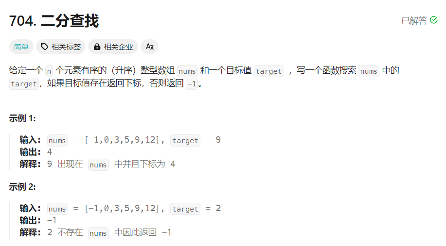

704. 二分查找
题目

思路
二分查找: 在升序数组 $nums$ 中寻找目标值 $target$，对于特定下标 $i$，比较 $nums[i]$ 和 $target$ 的大小：
如果 $nums[i]=target$，则下标 $i$ 即为要寻找的下标；
如果 $nums[i]>target$，则 $target$ 只可能出现在下标 $i$ 左侧；
如果 $nums[i]<target$，则 $target$ 只可能出现在下标 $i$ 右侧；
定义查找的范围 $[left,right]$
二分查找的条件是查找范围不为空，即 $left≤right$
时间复杂度: $O(logn)$，其中 $n$ 是数组的长度
空间复杂度: $O(1)$
题解
class Solution {
public:
int search(vector<int>& nums, int target) {
int left = 0, right = nums.size() - 1;
while (left <= right) {
int mid = left + ((right - left) >> 1);
if (nums[mid] == target) {
return mid;
} else if (nums[mid] > target) {
right = mid - 1;
} else {
left = mid + 1;
}
}
return -1;
}
};